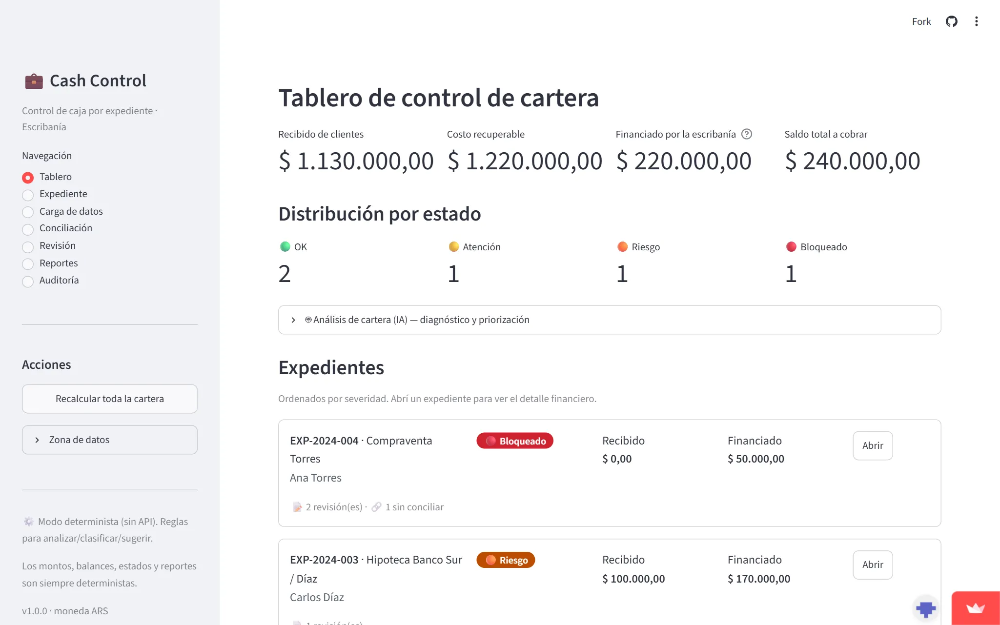

Cash reconciliation · Notarial businessConciliación de caja · Negocio notarial
Agentic Cash RecConciliación de caja agéntica
Enterprise-grade cash control per legal case (expediente) for a notarial firm. It tracks client advances, recoverable expenses and bank movements, reconciles them, and flags which files are OK, at risk, or blocked, with every amount computed in deterministic Python. Control de caja de nivel enterprise por expediente para un negocio notarial. Sigue anticipos de clientes, gastos recuperables y movimientos bancarios, los concilia y marca qué expedientes están OK, en riesgo o bloqueados, con cada monto calculado en Python determinista.

The problemEl problema
A notarial firm needed precise cash management per case: client advances, reimbursable expenses, bank movements and the resulting financial state, with zero tolerance for computational error. In accounting, a number that's "almost right" is wrong.Un negocio notarial necesitaba gestión de caja precisa por expediente: anticipos de clientes, gastos reembolsables, movimientos bancarios y el estado financiero resultante, con cero tolerancia al error de cálculo. En contabilidad, un número "casi bien" está mal.
The approachEl enfoque
One rule drives the design: the LLM never invents numbers. A deterministic Python core does all financial math with Decimal arithmetic; an optional Claude layer only classifies and explains. Concerns are cleanly separated into domain logic (100% testable), persistence, services, and UI.Una regla guía el diseño: el LLM nunca inventa números. Un núcleo en Python determinista hace toda la matemática financiera con aritmética Decimal; una capa opcional de Claude solo clasifica y explica. Las responsabilidades están separadas: lógica de dominio (100% testeable), persistencia, servicios y UI.
ArchitectureArquitectura
- Domain engine, per-case balances, status classification (OK / Attention / Risk / Blocked) and reconciliation matching.Motor de dominio, saldos por expediente, clasificación de estado (OK / Atención / Riesgo / Bloqueado) y matching de conciliación.
- Hash-chained audit log detecting tampering via sha256(prev_hash + payload).Auditoría hash-encadenada que detecta manipulación con sha256(prev_hash + payload).
- Flexible ingestion, CSV/Excel import tolerating Argentine (1.234.567,89) and Anglo number formats.Ingesta flexible, import CSV/Excel que tolera formatos numéricos argentinos (1.234.567,89) y anglosajones.
- HITL matching, deterministic reconciliation suggestions (amount anchor + date proximity + text match) requiring human confirmation.Matching HITL, sugerencias de conciliación deterministas (ancla de monto + proximidad de fecha + match de texto) que requieren confirmación humana.
- Graceful degradation, the system stays fully operational without an API key, falling back to rule-based analysis.Degradación elegante, el sistema queda totalmente operativo sin API key, con análisis basado en reglas.
OutcomeResultado
Full cash control per expediente, answering eight core questions about every case file.Control total de caja por expediente, respondiendo ocho preguntas clave de cada caso.
From funds received and bank movements to pending balance, reconciliation gaps, case state and required reviews, with an immutable audit trail behind every figure.Desde fondos recibidos y movimientos bancarios hasta saldo pendiente, brechas de conciliación, estado del caso y revisiones requeridas, con una auditoría inmutable detrás de cada cifra.